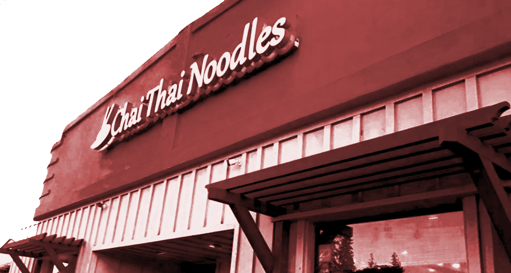
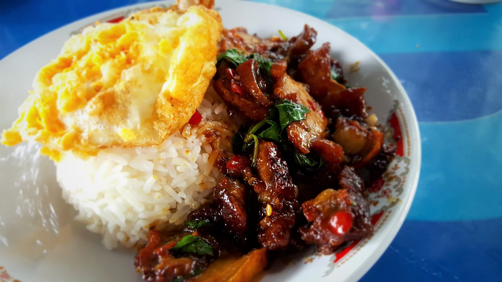
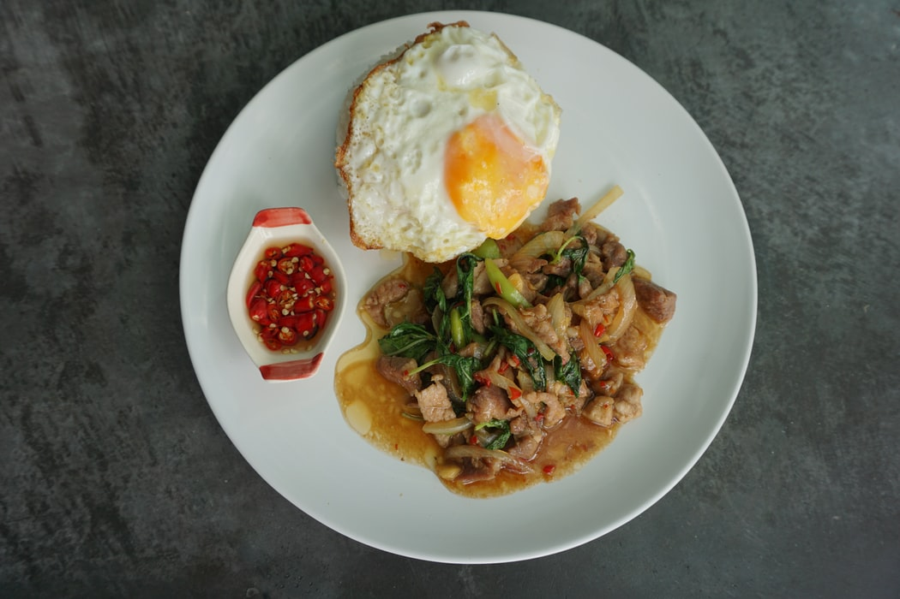
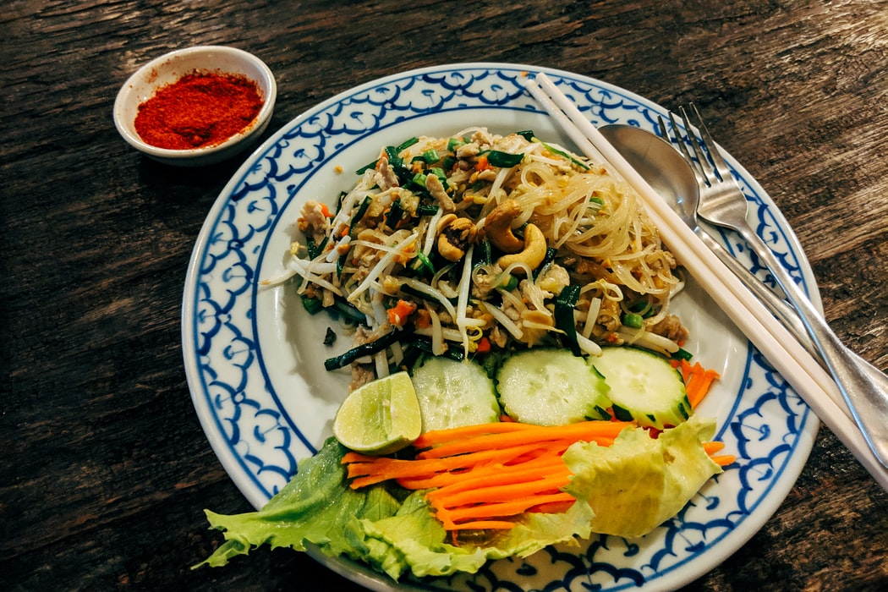
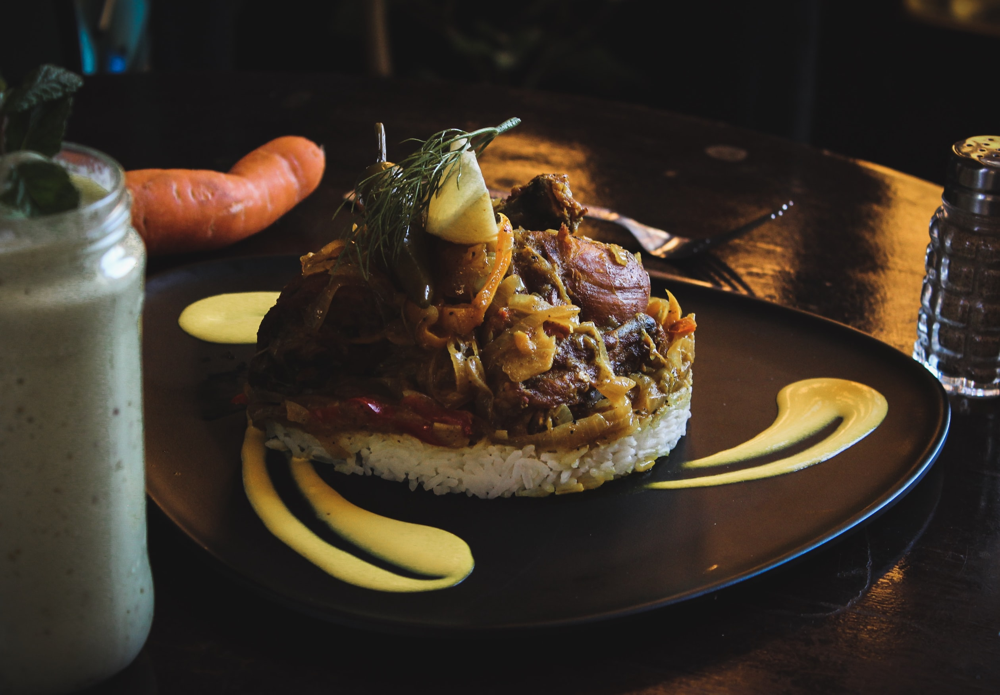

ABOUT US
Chai Thai Noodles has served authentic Thai & Lao food in the East Bay since 2008. Our cuisine selection is anything but bland. We pride ourselves in our unique Thai dishes. All of our dishes are hand-crafted and cooked from the heart. Our mission is to use the freshest ingredients to embrace Thailand's beautiful authentic dishes. We have two locations in the East Bay- Berkeley and Hayward.
REVIEWS

“Chai Thai Noodles is anything but bland”
— SFGate

"Most dishes have roots in Central Thailand, a few are northern — some of the best things I tried here, though, trace a connection to greater Bangkok."
— East Bay Express

"What’s not to like? Most dishes are under $10, portions are generous, and the dishes are complex with thoughtful layers of flavor and texture."
— KQED

Thank you for your support! We appreciate everyone's kindness during this time. Stay safe and healthy.
We are OPEN for takeouts. Please call for Curbside pickup or delivery with DOORDASH and GRUBHUB.